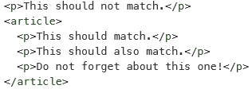

This is me
Har erfaring med python, java og diverse web utviklingsverktøy.
Under kommer det informasjon om hva jeg tenker om faget.
Har store forventninger til kurset og tenker at det blir artig å lære mer om teknologien som ligger bak nettsider
Questions Assignment 1
- What does the server in the client server architecture do?
- Serveren komponenten inneholder en funksjon eller en tjeneste til en eller flere kunder, som initierer forespørsler om slike tjenester.
- What does the client do?
-
En klient er et stykke maskinvare eller programvare som har tilgang til en tjeneste som gjøres tilgjengelig av en server.
- What is an IP address?
-
En unik kombinasjon av tall atskilt med punktum , og som identifiserer hver datamaskin ved hjelp av Internett -protokollen for å kommunisere.
- What is DNS?
-
De opprettholder en katalog av domenenavn og oversette dem til adresser Internet Protocol (IP).
- What is the difference between the Internett and WWW?
-
Internett er et massivt nettverk av nettverk . Det knytter millioner av datamaskiner sammen globalt , danner et nettverk der alle datamaskiner kan kommunisere med en annen datamaskin , så lenge de er begge koblet til Internett . Informasjon som reiser over Internett gjør det via en rekke språk som kalles protokoller.
-
The World Wide Web , eller rett og slett Web , er en måte å få tilgang til informasjon på mellom av Internett. Det er en informasjonsdelingmodell som er bygget på toppen av Internett. Web bruker HTTP -protokollen , bare ett av språkene som snakkes over Internett, til å overføre data .
- Explain what HTML is.
-
Hypertext Markup Language, et standardisert system for merking av tekstfiler for å oppnå font, farge , grafisk , og hyperlink effekter på WWW.
Questions assignment 2
- Why does inline style CSS override rules defined in style elements and external stylesheets?
-
Det er tre mulige måter å legge til CSS.
-
External style sheet: Kan endre hele utsene på siden ved å endre en fil. Det
krever at hver side linker til CSS'en i link-elementet.
-
Internal style sheet: Brukes for å endre en enkelt side og blir definert ved å
bruke style-elementet i head-elementet.
-
Inline style: Brukes for å endre et singelt element på siden. Bruker også style-elementet
men blir skrevet dirkete etter hoved-elementet. "h1 style = "color:blue;"
De forskjellige måtene blir generelt satt i rekkefølge etter hvor prioritert de er. I praksis er det
koden som blir lastet sist som kommer til å gjelde.
-
Inline style ( i HTML-elementet)
-
External and internal style sheets (i head-elementet)
-
Browser default
- Give a brief example of when to use ID and when to use class in CSS.
-
ID er unik, hvert element kan bare ha en ID og hver side kan bare ha et element med den ID'en.
Den kan altså bare brukes en gang.
Hvis man bruker ID'en flere ganger vil ikke CSS koden gå igjennom valideringen.
Med en class kan du bruke den så mange ganger du vil, type du kan lage en classe som du bruker på alle
bilder på siden din. Du kan også bruke flere klasser på samme element.
- What does RGBA mean and what colors can you express with it?
-
RGBA står for 'red green blue alpha'. Det er bare en RGB modell med en ekstra alpha informasjon.
Du kan vise alle farger som kan lages med RGB og A brukes som for å få frem en transparang illusjon, kan se
gjennom fargen. Hvis den A = 100% vil du ha fargen vist av RGB, men er den på 0% vil RGB fargen bli helt
gjennomsiktig.
- Why do we include CSS files inside the head element and not inside the body element?
-
Fordi elementene i head vil bli lastet opp før body. Som vil si at stilen på siden vil være
lastet opp før selve innholder bli. Ting som bakgrunsfarge og andre elementer vil dermed dukke
opp på skjermen veldig raskt.
Hvis du linker CSS filen i body vil nettsiden også måtte oppdatere seg hver gang den passere den
kode linjen.
- What CSS selector matches all the p elements inside the article element in the following HTML?

-
For å bare endre på p-elementene som ligger i article-elementet må du først gå inn i article-elementet
delen. Ved å skrive "article p" vil man referere til p-elementene i article-elementet.
Questions assignment 3
- What is the difference between position: absolute and position: fixed?
-
Position fixed gjør slik at elementet blir stående på samme sted selvom man scroller opp og ned på siden.
-
Position absolute er plasert relativt til sin nærmeste "foreldre". Hvis den ikke har noen "foreldre"
vil den ta utgangspunktet i elementet body. Elementet følger med når du scroller.
-
With CCS3, how do we access the third element within another element?
-
I CCS3 har man noe som hter nth-child, som gjør det slik at du kan iterer over
liste elementene eller hvilke som helst element og velge det elementet som du ønsker.
Kan ta annenhvert element, eller bare vært syvende element. Kan også spesifisere barn nr
for å bare ta det elementet. Kan skrive nth-child(3) for å velge bare det tredje barnet. Eller da
det tredje elementet.
Så for å akksesere det tredje elementet i et annet element må man først skrive det første
elementet type "div" og så det neste elementet etterfulgte av nth-child(3).